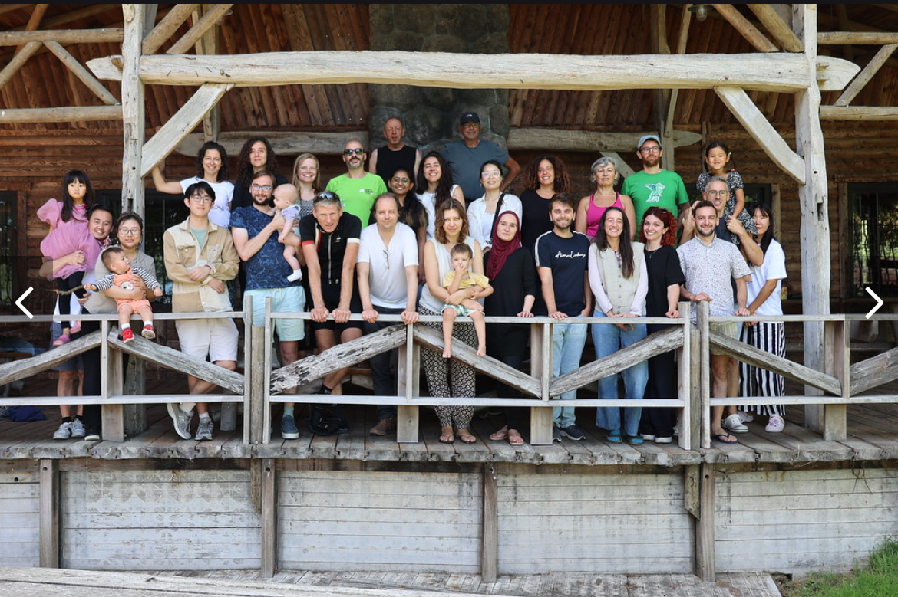

University of Groningen — Information Science & Computational Linguistics
40
In honor of the retirement of GJ van Noord.

Alfa-Informatica began as a study programme spanning Information Science, Humanities Computing, Artificial Intelligence, Information Technology, and Language Technology, an unusually broad combination for its time.
Forty years on, that programme has grown into today's Information Science degree and the research group now known as GroNLP, working on language technology, digital humanities, and natural language processing more broadly. This event brings together colleagues, alumni, and friends of the group to mark that history together.
We invite ... to submit an abstract for a poster at the anniversary event. We welcome contributions on language technology, computational linguistics, information science, and digital humanities.
Submit your abstract by uploading it to the shared Drive folder below.
Attendance is free, but we kindly ask everyone planning to join, to register in advance so we can plan catering and seating.
For many, many years, Gertjan has been part of our research community. A spiritual guide, a source of emotional support, a fountain of boundless wisdom. With his soft footsteps in the corridor, his low and gentle voice, and his ever-thoughtful advice, his presence hovers over all of us and makes us feel at home. Soon, sadly, we'll have to let him go, but we know he'll get along just fine without us. We know where to find him...wandering through the national parks around Groningen, camera fully kitted out, an enormous telephoto lens paired with binoculars dangling from his chest, hunting for the rarest bird species in the area. Or surrounded by the love of his grandchildren, scampering around him. In short, Gertjan has always had something to give, and always will.
Call for Memories. We're putting together a memory book for GJ, and we'd love your contribution: photos, stories, quotes, anecdotes, tributes, poems, scanned notes or cards, or anything else that captures your connection with him. Entries can be short or long, serious or funny, in English or Dutch. All are welcome!
Add your contribution to the shared Drive folder below.
Highlights & most cited publications
Doors open & registration
Walk-in, coffee, and informal reunion.
First keynote
Speaker and title to be announced.
Poster session
Contributed posters from alumni and current members.
Lunch break
Second keynote
Speaker and title to be announced.
Coffee break
Panel session
Panelists to be announced.
Extra activity
Details to be announced.